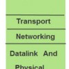
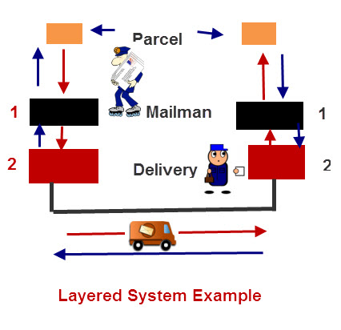
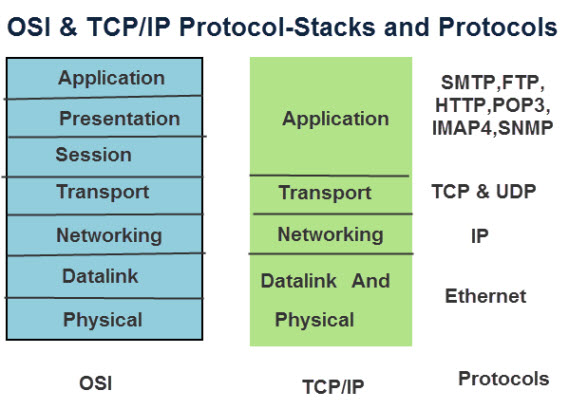
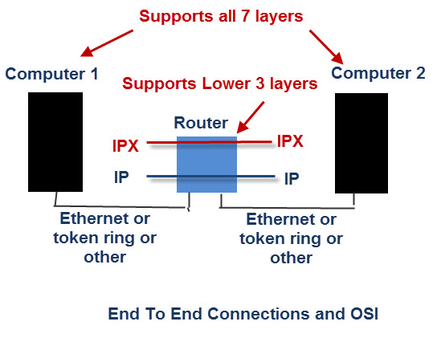

Any one starting to learn about computer networking will be faced with learning about the OSI and TCP/IP networking models, and the TCP/IP protocol suite.
In this tutorial we will look at networking protocols, and explain how and why they are structured into layers.
We will then look at the most common protocol suite, the TCP/IP protocol suite.
What you will Learn
- What are Protocols and what is a protocol suite
- Why Protocols use a stack model
- The OSI and TCP/IP networking model
- How Protocols work across Networks.
- The TCP/IP protocol layers and the main protocols of each layer.
What is a Protocol ?
A protocol is a set of rules that govern how systems communicate. For networking they govern how data is transferred from one system to another.
What is a Protocol Suite ?
A protocol suite is a collection of protocols that are designed to work together.
Before TCP/IP became the de-facto standard other protocol suites like IPX and SPX were common (Novell).
Protocol Stacks
It is possible to write a single protocol that takes data from one computer application and sends it to an application on another computer.- A Single stack Protocol
The problem with this approach is that it very inflexible, as any changes require changing the entire application and protocol software.
The approach used in networking is to create layered protocol stacks.
Each level of the stack performs a particular function and communicates with the levels above and below it.
This layered arrangement is not confined to networking, and how it works is probably best understood if you compare it to real life example.
Lets take an example of a parcel service between two offices.
The task is simple – send parcels between people in each office.
We will divide the task into two distinct processes as follows:
- Take a package, wrap it and address it.
- Send it to the destination
at the receiving end
- Receive the package
- Deliver it to the recipient
Typically you would have an internal mail man that:
- Collects the parcels from the senders and takes then to a mail dispatch room.
- The parcels are placed in a van by the dispatcher and then driven to the remote office.
At the remote office
- The parcels are received by the dispatcher and placed into a tray for the mail man
- The mail man collects the parcels and delivers them to the recipients,
Here is a diagram to illustrate the process:

The question really is what is the advantage of splitting the task into different layers/tasks?
The answer is that any of the layers/tasks can be changed without affecting the other layers.
So if for example, if we decide to use a train instead of a van to transport the messages between the offices we could do so without affecting the mail man.
In fact the mail man doesn’t know, and doesn’t care, how the parcels are transported between the offices, as all he does is collect them, and pass them to the delivery man.
Although this appears very simple, and maybe trivial, it does illustrate some very important points that are crucial when it comes to understanding networking protocols and how they are organised.
The OSI and TCP/IP Networking Models
All networking courses teach the 7 layer OSI model.
It is important to understand that this model provides for a conceptual framework, and no modern protocols implement this model fully.
The TCP/IP protocol suite uses a 4 layer model.
Note: The OSI model is an idealised networking model, whereas the TCP/IP model is a practical implementation.
This is how the TCP/IP and OSI models compare

This article has a good overview of the OSI protocol layers and their functions
What is important to understand is that the interfaces between the interfaces are well defined so that it is theoretically possible to replace a particular protocol with another one that operates at that level.
For example you should theoretically be able to replace the IP networking protocol with the IPX networking protocol without affecting how the application e.g. POP3 works.
Although this doesn’t always apply the application protocols like SMTP ,POP3 etc will work Okay across different data link protocols like Ethernet,Token ring etc.
End to End Connections- Routers,Switches and OSI
When two computers communicate across a network the data must travel through various items of networking equipment.
You will often hear the terms level 2 and level 3 equipment used. These terms refer to the OSI levels of the protocol stack that the device operates at.
A router for example works at the networking layer and is a level 3 device.
A switch operates at the Ethernet level and is a level 2 device.

Because a router operates at the networking layer it doesn’t need to support the upper layer application protocols like HTTP,FTP etc.
The router works on network address which are part of the networking protocol (IP or IPX).
A router can route many different protocols at the same time, but it doesn’t do protocol conversion.
An IP packet coming in will be an IP packet going out and an IPX packet coming in will be an IPX packet going out.
To do protocol conversion you will need a Gateway.
Likewise a switch doesn’t have level 3,4,5,6 or 7 protocol stacks as it doesn’t need them, and so it doesn’t care about the routing protocol IP,IPX etc or the application FTP,HTTP etc that passes through it.
Because the switch operates at level 2 (data link layer) it only needs to understand the MAC addresses that are part of the Ethernet protocol.
The TCP/IP Protocol Suite
The TCP/IP protocol suite consists of many protocols that operate at one of 4 layers.
The protocol suite is named after two of the most common protocols – TCP (transmission Control Protocol) and IP (internet Protocol).

TCP/IP was designed to be independent of networking Hardware and should run across any connection media.
The earliest use, and the most common use is over Ethernet networks.
Ethernet is a 2 layer protocol/standard covering the physical and data link layer, shown in the diagram above.
Important Notes:
HTTP (hypertext transfer protocol) -This is the workhorse of the Web.
SMTP,POP3,IMap4 – These are email protocols
TCP (Transmission control protocol) is a connection orientated protocol and is used to provides a reliable end to end connection. Lost packets are re-transmitted. See here
UDP (used datagram protocol) is connection less protocol and doesn’t guarantee delivery. See here
Applications will choose which transmission protocol to use based on their function. HTTP, POP3, IMAP4, SMTP and many more use TCP.
UDP is used more in utility applications like DNS, RIP (routing information protocol), DHCP.
IP (Internet Protocol) – This is the main networking protocol. There are two version of IP (IPv4 and IPV6).
ARP (address resolution Protocol) -Translates an IP address to a MAC or physical address.(IP4 networks)
Summary
The TCP/IP protocol suite is a collection of protocols that are used on the Internet.
It is named after two of the main protocols (TCP and IP) and uses a 4 layer networking model.
Related Articles and resources:
- Understanding TCP/IP ports and sockets
- UDP and TCP what is the Difference
- Internet protocol suite-wiki
- The OSI 7 Layer Model
- Basic networking course
Save
Save
Save
Save
Save
Save
Save
Save